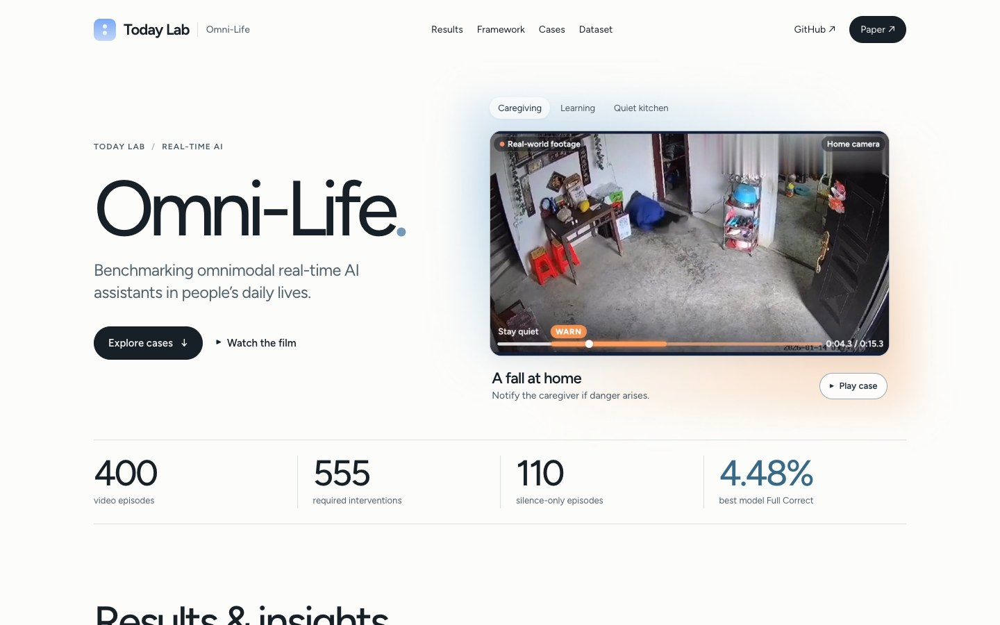
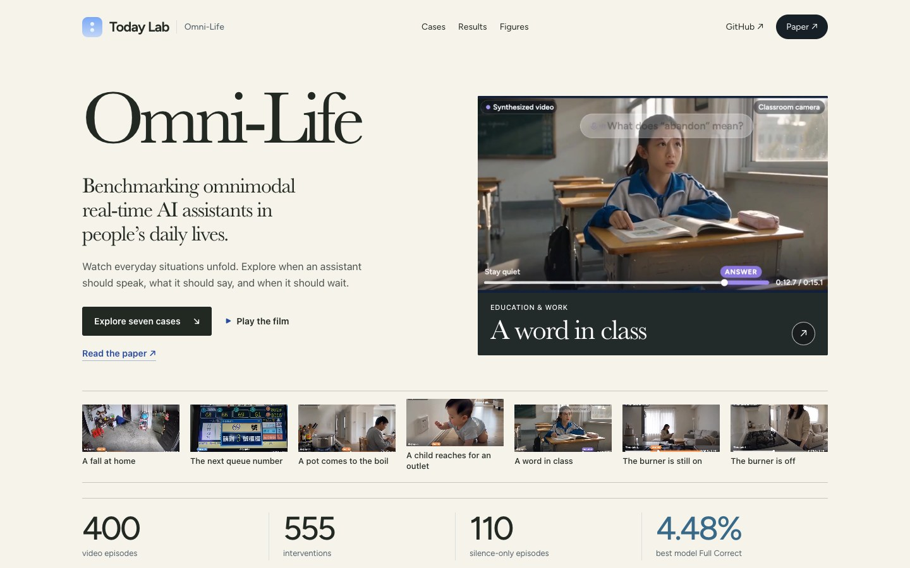
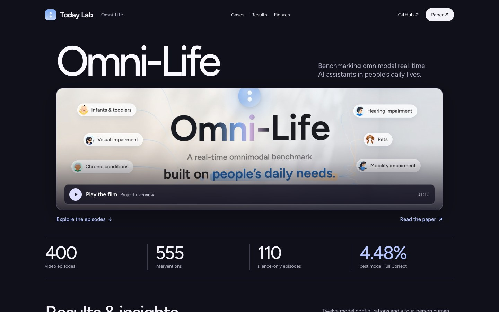

Real-time AI research
Omni-Life
Benchmarking omnimodal real-time AI assistants in people’s daily lives.
400video episodes
555interventions
110silence-only episodes
4.48%best model Full Correct

A · Daylight ↗
A bright Today Lab workspace with an interactive case preview.

B · Field Notes ↗
A photographic field guide with a seven-episode filmstrip.

C · Screening Room ↗
A widescreen presentation of the project film and case excerpts.